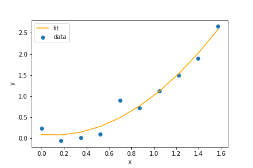
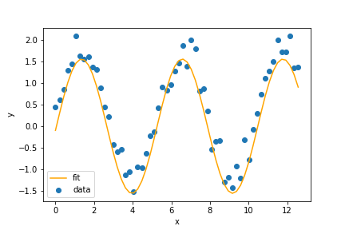
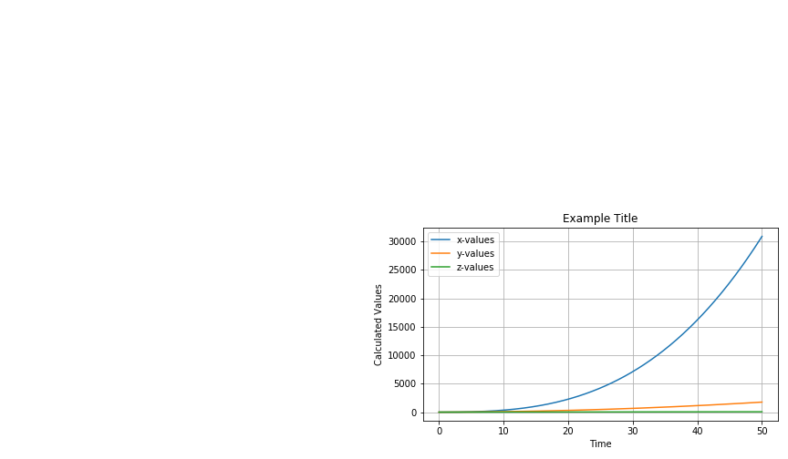
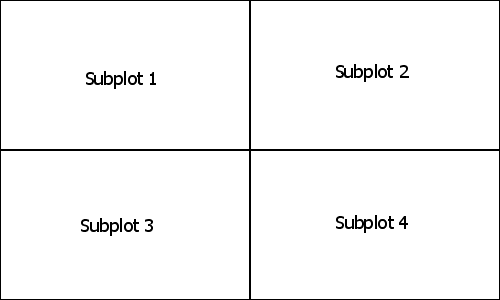

import numpy as np from scipy.integrate import odeint import matplotlib.pyplot as plt %matplotlib inline import pandas as pd import seaborn as sns import random from scipy.optimize import curve_fit
column1, column2 = np.loadtxt('data.csv', usecols = (0,1), unpack=True, skiprows = 1, delimiter=',')
data_frame = pd.read_csv('data.csv',encoding='ISO-8859-1')
#displays the top part of the dataframe data_frame.head() #displays the bottom part of the dataframe data_frame.tail() #displays various stats about the data frame data_frame.describe() #a list of columns in the dataframe data_frame.columns #produces a histogram of a column data_frame['col1'].plot.hist() #produces a scatter plot of two columns data_frame.plot.scatter(x='col2',y='col1') #produces a boxplot of two columns data_frame.boxplot(column = ['col1','col2'])
sns.set() #Sets styling to seaborn sns.reset_orig() #Returns styling to default sns.despine() #Removes borders #List of various styles: sns.set_style("ticks") #List of various contexts: sns.set_context("paper") sns.set_context("talk") sns.set_context("poster") sns.set_context("notebook") #Jointplot scatter sns.jointplot(data_frame['col1'], data_frame['col2'], kind="reg")
#Find the best parameters to fit our data parameters = np.polyfit(x, y, 2) #Create a function from the parameters fit_function = np.poly1d(parameters) #Use that function to calculate the values our fit line expected_y = fit_function(x) #Plot the original data and our fit line plt.scatter(x, y, label = 'data') plt.plot(x, expected_y, color = 'orange', label = 'fit') 
#function that we will fit the data to def curve_function(x, a, b, c): return a * np.cos(b * x + c) #use curve_fit to get the parameters for the function paramters, matrix = curve_fit(curve_function, x, y) a = paramters[0] # get fitted a parameter b = paramters[1] # get fitted b parameter c = paramters[2] # get fitted c parameter #use our function to calculate the expected values of y y_expected = curve_function(x, a, b, c) # plot our data and fit line plt.scatter(x, y, label = "data") plt.plot(x, y_expected, color = "orange", label = "fit") 
For example, if we have a system of variables X, Y, and Z with time derivatives:
where a and b are parameters for the derivatives.
We can use the following model to solve the equations:
def derivatives(state, time, a, b): # Put the parameters here X = state[0] Y = state[1] Z = state[2] dXdt = Y + a * time # Set the derivative equations here dYdt = Z dZdt = b return [dXdt, dYdt, dZdt] a = 0.5 # Set the values of your parameters here b = 4/3 init = [1,.1, 2] # Set the initial conditions here time = np.linspace(0,50,500) # Set the time that you plan on integrating across # For this example we will run from 0 to 50 with 500 intervals solution = odeint(derivatives, init, time, args=(a, b))# Call odeint with the initial condition and parameters X = solution[:,0] Y = solution[:,1] Z = solution[:,2]
plt.figure(1, figsize=(12,7)) # creates and sets the current figure with figure number 1 # change this '1' to a different number if you need more than one figure plt.subplot(224) # selects the fourth plot in a 2 by 2 grid of subplots # this line is unnecessary if you only need to display one plot plt.plot(time, X, label='x-values') plt.plot(time, Y, label='y-values') plt.plot(time, Z, label='z-values') plt.grid() # enables the grid plt.legend() # enables the legend plt.xlabel('Time') # creates a label for the x axis plt.ylabel('Calculated Values') # creates a label for the plt.title('Example Title') # adds a title for the whole plot plt.tight_layout() # prevents the titles from overlapping plt.savefig("Example.png") # saves the figure as an imageOutput:
Diagram of plt.subplot():

heatmap = [] for i in range(100): heatmap.append([]) for j in range(100): heatmap[i].append(i*j) plt.matshow(heatmap)